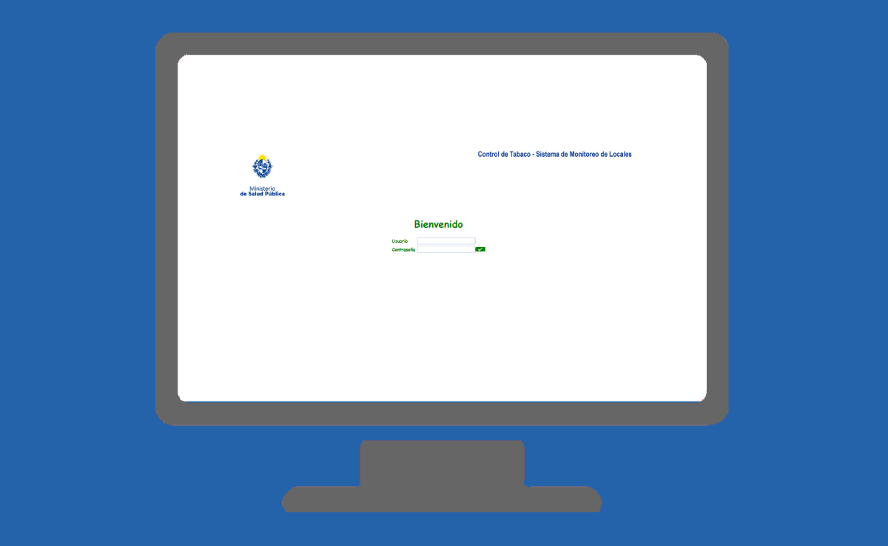

Listado de Sistemas de DIGESE
-

Sistema de Registro Corporativo
Este sistema es una conjunción de módulos que son denominados el core de los sistemas del Ministerio, dado que centralizan información y servicios que permiten interoperar entre los sistemas internos y externos al MSP de manera segura.
-
Historia Clínica Electrónica Nacional
El MSP al contar con sistemas que produce y es única fuente en algún caso, aporta dichos datos a la Historia Clínica Electrónica Nacional (HCEN). Además cuenta con sistemas para recepcionar información de plataforma HCEN.
-
Sistema de Búsqueda de Documentos
Este sistema permite el almacenamiento y búsqueda de las resoluciones y ordenanzas realizadas por las autoridades del MSP.
-

Planificación Estratégica
El sistema informático “Planificación estratégica” tiene como objetivo el control del proceso de ingreso, validación y seguimiento de la Planificación Estratégica del Inciso 12 (Ministerio de Salud Púbica) y de su desempeño.
-
Directorio Telefónico
El sistema de Directorio telefónico del Ministerio de Salud Pública, permitirá la consulta de datos y ubicación física de los funcionarios que laboran dentro de la Página 24 de 25 sede central y los diecinueve (19) departamentos que conforman Uruguay y los institutos adscrito al MSP.
-
REDCOBWEB
Sistema que permite a los ciudadanos agendarse para recibir la vacuna contra la fiebre amarilla a través de Abitab.